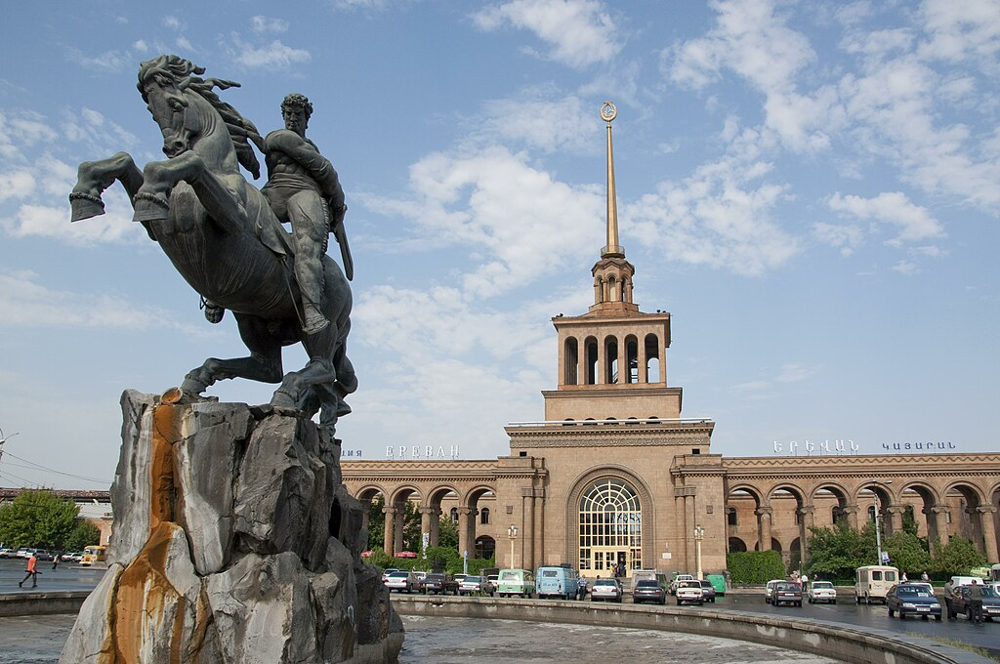
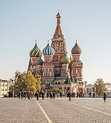

Culture Blog
3. David of Sassoun
David of Sassoun (Armenian: Սասունցի Դաւիթ Sasuntsi Davit also spelled David of Sasun) is the main hero of Armenia's national epic Daredevils of Sassoun, who drove Arab Egyptian invaders out of Armenia.
2. Colosseum
The Colosseum (/ˌkɒləˈsiːəm/ KOL-ə-SEE-əm; Italian: Colosseo [kolosˈsɛːo]) is an elliptical amphitheatre in the centre of the city of Rome, Italy, just east of the Roman Forum. It is the largest ancient amphitheatre ever built, and is still the largest standing amphitheatre in the world, despite its age.

1. Saint Basil's Cathedral
The Cathedral of Vasily the Blessed (Russian: Собор Василия Блаженного, romanized: Sobor Vasiliya Blazhennogo), known in English as Saint Basil's Cathedral, is an Orthodox church in Red Square of Moscow, and is one of the most popular cultural symbols of Russia.
